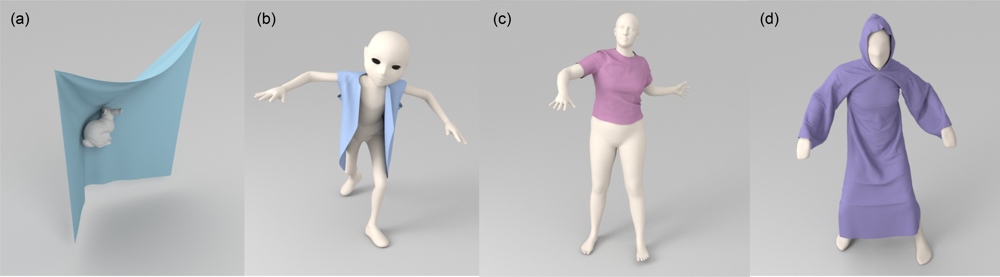

1 - Zhejiang University, China
2 - University of Maryland at College Park, USA
3 - Tencent
Results: Given the initial template of the cloth mesh and the target obstacle mesh, our network can predicate a plausible target 3D cloth mesh for general scenes. We highlight (a) the final cloth mesh wrapped around a bunny; (b) the draping jacket on a non-SMPL human body; (c) the t-shirt deformation on a SMPL human body; (d) a human dressed in a robe represented by 100K triangles. All predicted meshes are different from the datasets used for training. Our approach runs at 30 − 45fps on an NVIDIA GeForce RTX 3090 GPU.
Abstract
We present a novel mesh-based learning approach (N-Cloth) for plausible 3D cloth deformation prediction. Our approach is general and can handle cloth or obstacles represented by triangle meshes with arbitrary topology. We use graph convolution to transform the cloth and object meshes into a latent space to reduce the non-linearity in the mesh space. Our network can predict the target 3D cloth mesh deformation based on the state of the initial cloth mesh template and the target obstacle mesh. Our approach can handle complex cloth meshes with up to 100K triangles and scenes with various objects corresponding to SMPL humans, Non-SMPL humans, or rigid bodies. In practice, our approach demonstrates good temporal coherence between successive input frames and can be used to generate plausible cloth simulation at 30−45 fps on an NVIDIA GeForce RTX 3090 GPU. We highlight its benefits over prior learning-based methods and physically-based cloth simulators.
Paper (PDF 11.6 MB)
Yudi Li, Min Tang, Yun Yang, Zi Huang, Ruofeng Tong, Shuangcai Yang, Yao Li, Dinesh Manocha, N-Cloth: Predicting 3D Cloth Deformation with Mesh-Based Networks,
Computer Graphics Forum, 41(2): 547-558 (Proceedings of Eurographics 2022), 2022.
@article{ncloth22,
author = {Li, Yudi and Tang, Min and Yang, Yun and Huang, Zi and Tong, Ruofeng and Yang, Shuangcai and Li, Yao and Manocha, Dinesh},
title = {{N-Cloth}: Predicting {3D} Cloth Deformation with Mesh-Based Networks},
journal = {Computer Graphics Forum (Proceedings of Eurographics)},
volume = {41},
number = {2},
pages = {547--558},
month = May,
year = {2022},
}
CTSN: Predicting Cloth Deformation for Skeleton-based Characters with a Two-stream Skinning Network
I-Cloth: Incremental Collision Handling for GPU-Based Interactive Cloth Simulation
PSCC: Parallel Self-Collision Culling with Spatial Hashing on GPUs
I-Cloth: API for fast and reliable cloth simulation with CUDA
Efficient BVH-based Collision Detection Scheme with Ordering and Restructuring
MCCD: Multi-Core Collision Detection between Deformable Models using Front-Based Decomposition
TightCCD: Efficient and Robust Continuous Collision Detection using Tight Error Bounds
Fast and Exact Continuous Collision Detection with Bernstein Sign Classification
A GPU-based Streaming Algorithm for High-Resolution Cloth Simulation
UNC dynamic model benchmark repository
Collision-Streams: Fast GPU-based Collision Detection for Deformable Models
Fast Continuous Collision Detection using Deforming Non-Penetration Filters
Fast Collision Detection for Deformable Models using Representative-Triangles
DeformCD: Collision Detection between Deforming Objects
Self-CCD: Continuous Collision Detection for Deforming Objects
Interactive Collision Detection between Deformable Models using Chromatic Decomposition
Fast Proximity Computation Among Deformable Models using Discrete Voronoi Diagrams
CULLIDE: Interactive Collision Detection between Complex Models using Graphics Hardware
RCULLIDE: Fast and Reliable Collision Culling using Graphics Processors
Quick-CULLIDE: Efficient Inter- and Intra-Object Collision Culling using Graphics Hardware
This work is supported in part by the National Natural Science Foundation of China under Grant No.: 61972341, Grant No.: 61972342, Grant No.: 61732015, and the Tencent-Zhejiang University joint laboratory.